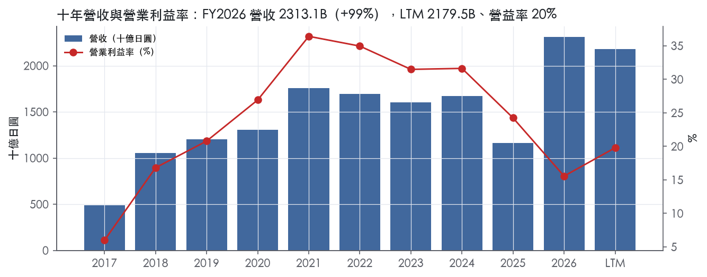

評等總表 › 未分類 › 7974.T
任天堂（7974.T）
盈餘走平、倍數回十年中位，偏空｜評等 賣出｜目標價 7859
評等歷史與財報快評
| 報告日 | 評等 | 目標價 | 當時股價 | 超額報酬 |
|---|---|---|---|---|
| 2026-11-16 | 賣出 | 7,859 | 8,894 | -16.6% |
| 評等 | 賣出（邊界，鄰近減碼） |
| 12 個月目標價 | 7859 日圓 |
| 現價 | 8894.00 日圓（2026-11-16） |
| 預期報酬 | 股價 -11.6%＋股息 2.8%＝總報酬 -8.8%；日股門檻 7.8%，超額 -16.6% |
| 估值方法 | P/E 17.5x，套在第 5–8 季的EPS（也就是一年後的未來四季） |
| 三情境 | 熊 5009／基準 7832／牛 10585 |
| 研究流程 | 四位研究員兩輪辯論＋研究總監裁決 |
| 資料來源 | EDINET、TDnet、J-Quants、Yahoo、FRED（全免費） |
目錄
第一章 結論摘要
盈餘走平、倍數回十年中位，偏空（研究總監裁決，四位研究員兩輪辯論後）
評等 賣出（邊界，鄰近減碼）｜12 個月目標價 7859 日圓（總監三情境機率加權 7979 與研究員中位數 7738 各半）｜現價 8894.00（2026-11-16）
預期報酬：股價 -11.6%＋股息 2.8%＝總報酬 -8.8%。日股門檻 7.8%，超額 -16.6%，離減碼的分界不到三個百分點，屬邊界評等（落在其他級距的機率約三成）。
估值方法：P/E 17.5x，套在第 5–8 季的EPS（也就是一年後的未來四季）。三情境：熊 5009（26%）／基準 7832（42%）／牛 10585（32%）。
什麼會讓研究總監改變看法：FY2027Q3 營收不低於 806.32B 且 FY2028 期初計畫營收成長，我把 y1 轉正、倍數上調到持平的 19.9x 轉中性；2027-03-31 存貨仍高於 814.57B 或美國主機關稅重新加徵有日期，熊機率上調、y2 改 R3 的 -2%。
投資論點
- 第二年營收轉減：公司全年計畫營收 2,050.00B，低於上年 2,313.05B，需求已提前用掉。
- 倍數回十年中位：市場付 23.1x，我們只給 17.5x：現金轉換差，持分法利益不是現金。
- 軟體復刻上一代：牛情境機率 32%：第 3 年若複製 Switch 軟體搭售，營益率可到 26.9%。
關鍵數字
| 過去四季（實際，FY2027Q2） | 未來四季 | 第 5–8 季 | 第 9–12 季 | |
|---|---|---|---|---|
| 營收（B） | 2,179.5B | 2,135.9B | 2,242.7B | 2,287.6B |
| 營收成長 | 25.2% | -2.0% | 5.0% | 2.0% |
| 營業利益率 | 19.8% | 19.0% | 23.0% | 24.0% |
| EPS（日圓） | 385.27 | 376.31 | 447.53 | 469.02 |
| EPS 成長 | 21.5% | -2.3% | 18.9% | 4.8% |
| 每股股息（日圓） | — | 0.00 | 0.00 | 0.00 |
| P/E（現價） | 23.1x | 23.6x | 19.9x | 19.0x |
| 股息殖利率（現價） | 2.8% | — | — | — |
過去四季為申報數字；預測為研究總監的假設、程式計算。倍數與殖利率都用現價計算，用來看現價對應各期獲利的高低。
三情境
| 情境 | 機率（歷史） | 故事 | 未來四季營收成長 | 第 5–8 季營益率 | 倍數 | 目標價 | 股價漲跌 |
|---|---|---|---|---|---|---|---|
| 熊 | 26%（26%） | 風險表第 1 條熱度降溫與 2027-01 之後大作空窗、第 4 條 IEEPA 關稅重新加徵、第 3 條 814.57B 存貨跌價；總經取下行路徑失業率 5.1，日圓 160 只部分抵銷 | -8.0% | 19.0% | 14.5x | 5009 | -43.7% |
| 基準 | 42%（42%） | FY2027 超出計畫但 NTM 營收小幅年減，第 3 年低個位數成長、營益率 23%，倍數從五年分位 79% 回到十年中位 | -2.0% | 23.0% | 17.5x | 7832 | -11.9% |
| 牛 | 32%（32%） | Switch 2 第 3 年複製 Switch FY2020 的軟體搭售與利潤率 26.9%，市場維持接近現行前瞻倍數；總經取本行基準日圓 153 | 3.0% | 26.0% | 20.0x | 10585 | 19.0% |
目標價由程式依研究總監的驅動與倍數計算；機率由研究總監給定。括號內是歷史頻率：把這檔股票過去十年 12 個月報酬的波動形狀，置中在基準情境，結果落在各情境附近的比例。

四位研究員用不同方法各自估值，回應研究總監的質疑後交出第二輪，最後由總監逐點裁決。各研究員的主張見第七章，裁決理由見第八章，完整論證見《研究底稿》。
| 立場（一輪→二輪） | 加權目標價（一輪→二輪） | 評等（一輪→二輪） | 第二輪倍數 | 熊～牛目標價 | |
|---|---|---|---|---|---|
| R1 成長與敘事 | 中性→看空 | 8829→7701 | 減碼→賣出 | 21.0x | 5549～10364 |
| R2 資本報酬與價值 | 看空→看空 | 7920→7776 | 賣出→賣出 | 21.0x | 5173～10615 |
| R3 盈餘品質與下檔 | 看空→看空 | 7271→6200 | 賣出→賣出 | 15.0x | 3744～8910 |
| R4 市場隱含預期 | 看空→看空 | 7864→8002 | 賣出→賣出 | 17.5x | 5009～10585 |
| 研究總監裁決 | 看空 | 7859 | 賣出 | 17.5x | 5009～10585 |
目標價由程式依各自的驅動與倍數計算；評等＝機率加權總報酬 − 日股門檻。
第二章 業務概況
公司做什麼、賣給誰
任天堂是以「硬體＋軟體一體」的遊戲專用機為核心、單一報導分部的娛樂公司。集團由任天堂本社、32家子公司與4家關聯公司構成，本社及專門子公司負責開發，製造僅由任天堂本社進行，銷售主要由海外子公司如Nintendo of America、Nintendo of Europe、任天堂販売株式会社等負責。主要產品是以電腦技術為基礎的「遊戲專用機」（含攜帶型與家用主機的硬體與軟體），以及角色商品、撲克牌等周邊，同時也經營影像內容與手機應用程式等IP活用事業。公司的經營基本方針是「透過娛樂讓人們展開笑容」，追求健全企業經營下的新娛樂創造，並未設定特定財務指標目標，理由是娛樂商品的不確定性高、需保留彈性判斷空間。目標客群是全球家庭消費者，公司特別強調要提供「闔家可安心享受、放在客廳不會感到突兀」的娛樂體驗。任天堂本質上是一個IP加硬體生態系公司，營收高度綁定單一主機世代的生命週期；Switch 2於2025年6月上市，目前仍處於普及初期。
業務分部與產品
任天堂僅揭露單一報導分部，不依地區或產品線拆分利潤，僅就外部客戶銷售額區分「遊戲專用機」與「IP關聯收入等」兩類。FY2026（2026年3月期）全年營收2,313.05B，其中遊戲專用機2,239.54B、IP關聯收入73.51B，遊戲專用機佔比約96.8%。對照FY2025，全年營收1,164.92B，遊戲專用機1,083.53B、IP關聯收入81.39B；換算下來，遊戲專用機年增約106.7%，主要係Switch 2於FY2026上市帶動，IP關聯收入則年減約9.7%。FY2026全年毛利率39.3%、營益率15.6%，較FY2025的61.0%／24.3%明顯下滑，反映新主機硬體銷售佔比上升、硬體毛利率通常低於軟體與數位銷售。研發費用FY2026為177.8B，主要投入半導體記憶媒體、顯示裝置、無線通訊、VR/AR/MR及深層學習等技術在家庭娛樂領域的應用研究。資本支出FY2026為49.29B，占營收比重1.2%，主要用於研發設備及自用軟體等無形資產，全數以自有資金支應、未使用外部融資。FY2026全年EBITDA 375.97B、ROIC 18.2%，相較FY2021高峰的48.5%明顯回落，顯示上一代主機（Switch）進入生命週期末段後資本回報率已大幅下滑，新主機初期的效率爬坡仍待觀察。
客戶、地區與通路
任天堂的最大單一市場是美洲，其次是歐洲與日本本土，公司揭露顯示沒有任何單一客戶占合併營收10%以上。FY2026全年按地區：日本534.92B、美洲935.25B（其中美國790.11B）、歐洲551.47B、其他291.41B，合計2,313.05B。對照FY2025：日本274.88B、美洲515.13B（美國419.40B）、歐洲285.74B、其他89.17B，合計1,164.92B；可見美洲與歐洲的絕對增量皆高於日本本土，顯示Switch 2的海外需求擴張快於本土。FY2027上半年（2026年4-9月）海外營收占比達78.9%，海外營收762.4B。通路設計上，任天堂本社集中負責開發與製造，各地區銷售子公司僅具銷售功能，向任天堂本社採購產品再於當地市場銷售，銷售路線與市場單一，因此公司將整體經營資源配置與績效評估以集團整體為單位，而非按產品種類或地區拆分。日圓兌日圓匯率對任天堂盈餘敏感度高，因美洲（特別是美國）是最大單一市場，且多數海外銷售以當地貨幣計價再換算回日圓。
最近四季發生了什麼
最近四個季度，任天堂營收與獲利方向明顯受惠於Switch 2上市後的硬體與軟體雙重放量，但近兩季年增率已轉負、呈現基期墊高後的正常化。FY2026Q3（2025年10-12月）營收806.32B，年增86.3%，營益率19.2%，淨利159.93B，EPS137.36（資料包最近八季）。FY2026Q4（2026年1-3月）營收407.17B，年增95.1%，營益率14.7%，淨利65.19B，EPS56.28（資料包最近八季）。FY2027Q1（2026年4-6月）營收517.81B，年減9.5%，但營益率回升至27.5%，淨利147.42B，EPS127.88（資料包最近八季）。FY2027Q2（2026年7-9月）營收448.23B，年減15.0%，營益率16.5%，淨利73.49B，EPS63.75（資料包最近八季）。公司在2026年11月5日決算短信中揭露FY2027上半年累計經營細節：Switch 2硬體銷售649萬台、軟體銷售2,449萬本，Switch硬體127萬台、軟體6,573萬本，數位銷售249.6B（年增60.5%），IP關聯收入62.7B（年增87.9%），合併營收966.04B。營業利益216.50B（年增49.1%），公司說明主要因軟體銷售占比上升，加上第一季認列美國IEEPA關稅退還。加計持分法投資利益60.82B與利息收入26.73B後，經常利益300.68B，中期淨利220.92B。資產負債表上，總資產3,936.48B、負債952.94B、淨資產2,983.54B，較前期末各增加131.1B、102.8B、28.3B。公司業績展望維持2026年5月8日公布的全年計畫不變：營收2,050.00B、營業利益370.00B、經常利益430.00B、歸屬母公司淨利310.00B、EPS268.90日圓。H1營收966.04B已達全年計畫的47.1%，營業利益216.5B已達全年計畫的58.5%，顯示公司全年計畫明顯保守，下半年尚有多款新作（薩爾達傳說時之笛重製、Metroid Ravenna等）陸續上市，實際表現超越公司計畫的機率偏高。
公司自己說的成長引擎與策略
公司明確表示成長引擎來自「任天堂IP粉絲擴大」與「長期間與顧客的關係建立」這兩大指針，所有事業活動皆依此展開，並透過Nintendo Account將顧客關係延續成跨世代的長期連結。對於Switch 2，公司表示將持續投入魅力軟體、強化因應開發複雜化與長期化的開發體制、人才培育與開發效率提升，列為優先課題。同時，公司也強調要延續Switch已累積的普及基盤與豐富陣容，推動其軟體銷售擴大與稼動維持，而非僅聚焦新主機。在遊戲專用機以外，公司持續拓展影像內容、手機應用程式、角色商品等「ゲーム専用機ビジネスの枠外」領域，目的是增加消費者選擇任天堂娛樂的理由。研發方向則涵蓋VR/AR/MR、深層學習、大數據分析等新技術在家庭娛樂場景的應用可行性探索，以及多元周邊裝置設計與成本下降。整體而言，任天堂的成長本質是「主機世代切換週期」，Switch 2上市首年的高速成長已開始放緩（FY2027Q1、Q2營收連續年減），後續成長動能將更仰賴新作上市節奏與數位銷售占比提升，而非硬體台數的持續性高速擴張。目前股價對應trailing P/E 23.1x、EV/EBITDA 19.6x，均高於過去十年中位數（21.0x、未揭露對應EV/EBITDA十年中位數），顯示市場已把Switch 2普及週期的樂觀情境部分price-in。公司本期出售非上市政策保有股33.83B並維持縮減交叉持股的方向，呼應東證對資本效率與股東回報的要求。

第三章 經濟護城河
結論：窄，趨勢穩定
任天堂的護城河評為窄：自有 IP 與 Nintendo Account 帳戶基礎，足以支撐未來 5 年以上 ROIC 高於資本成本；但每一代主機都要重新押注，我們沒有把握跨越兩個主機世代後仍守得住。趨勢評為穩定：Switch 2 承接 Switch 普及基礎的設計，降低了世代轉換的斷層風險；不過目前沒有證據顯示壁壘正在變寬。
優勢來源
核心優勢是無形資產，其次是轉換成本與平台網路效應；成本優勢與效率規模沒有證據，不列入。
- 無形資產（IP）：公司把所有事業活動建立在「擴大任天堂 IP 粉絲」與「建立長期顧客關係」兩項指針上。FY2026 推出的 Switch 2 專用作包括《瑪利歐賽車 世界》《咚奇剛 蕉力全開》《卡比的乘騎賽車》《瑪利歐網球 狂熱》等。公司另持有寶可夢公司 32% 議決權，列為權益法關聯公司。這組 IP 可以跨世代重複變現，競爭對手既買不到，也做不出來。
- 轉換成本：公司表示要透過 Nintendo Account，把顧客關係發展成可直接提供娛樂、跨世代延續的關係。Switch 2 定位為承接 Switch 普及基礎的後繼機種，並推出《薩爾達傳說 曠野之息》《集合啦！動物森友會》等 Switch 2 Edition，讓舊軟體在新機上延續價值。帳戶、數位購買紀錄與 Nintendo Switch Online 訂閱，讓玩家留在任天堂的成本低、離開的成本高。
- 網路效應（平台雙邊）：公司持有萬代南夢宮、史克威爾艾尼克斯、科樂美、光榮特庫摩的股票，理由都是對方開發任天堂平台向軟體。公司也透過 Nintendo Developer Portal，持續支援包含個人在內的遊戲開發者。裝機量吸引第三方，第三方軟體再拉動裝機；但平台銷售主力仍是第一方作品，這一層效應弱於 IP 本身。
數字上看得到嗎
ROIC 支持護城河的存在：有資料的 9 年全部高於資本成本代理值 10.1%，十年平均 27.6%，平均超額 17.5%，最低一年也有 13.8%。資本成本代理值以美國 10 年債 5.1加 5% 計算，但日本 10 年債只有 2.841；對日圓計價的任天堂而言門檻偏嚴，實際超額報酬更厚。
利潤穩定度與寬護城河的要求衝突：ROIC 標準差 11.5%、營業利益率標準差 9.2%、FCF 利潤率標準差 10.3%。營業利益率從 FY2017 的 6.0%升到 FY2021 的 36.4%；ROIC 則從 FY2021 的 48.5%降到 FY2025 的 13.8%，波動幾乎完全跟著主機世代走。毛利率從 FY2025 的 61.0%降到 FY2026 的 39.3%，顯示新機上市時硬體占比一拉高，利潤率就被壓縮。
因此我們評為窄，而不是寬：十年底稿只涵蓋 Switch 這一個成功世代；ROIC 低點出現在世代末段且仍高於門檻，證明 IP 有托底能力，卻無法證明下一次硬體押注失準時仍守得住。
什麼會侵蝕它
最大威脅是硬體世代押注失準，因為營收幾乎全數綁在遊戲專用機上。FY2026 遊戲專用機外部營收 2,239.54B，IP 關聯收入等僅 73.51B，且低於 FY2025 的 81.39B。公司自承顧客追求的娛樂日益多樣、技術持續進步，競爭因此激化，市場變化劇烈。公司也把因應開發複雜化、長期化的開發體制強化，列為優先課題。若第一方大作的推出間隔拉長，IP 變現頻率就會下降，世代末段的 ROIC 低谷會更深、更久。手機與免費遊戲若持續搶走輕度玩家的時間，會直接削弱任天堂擴大裝機所倚賴的家庭與新手客群。
對估值的含意
目標倍數相對日本遊戲同業應給小幅溢價：IP 與帳戶基礎讓 ROIC 在有資料的 9 年中從未跌破資本成本，且淨負債為 -1,422.08B。但護城河只有窄，利潤率又隨世代循環大幅波動，不支持寬護城河等級的長期溢價；P/E 錨點宜貼近自身 10 年中位數 21.0x，而不是現在的 23.1x。溢價年限只算到 Switch 2 世代結束，不外推到下一代主機。
量化底稿：報酬率與利潤率的水準與穩定度
| 指標 | 最新 | 十年平均 | 標準差 | 最低 | 最高 |
|---|---|---|---|---|---|
| ROIC | 18.2% | 27.6% | 11.5% | 13.8% | 48.5% |
| 毛利率 | 39.3% | 49.3% | 8.1% | 38.2% | 61.0% |
| 營業利益率 | 15.6% | 24.5% | 9.2% | 6.0% | 36.4% |
| FCF 利潤率 | 11.4% | 16.2% | 10.3% | -0.6% | 34.4% |
| ROE | 14.9% | 17.8% | 5.6% | 10.5% | 28.1% |
程式計算。資本成本代理值（10 年債＋5%）：10.1%；ROIC 平均減資本成本：17.5%；ROIC 有資料的 9 年中，高於資本成本 9 年。
第四章 財務體質與盈餘品質
結論：中品質，現金轉換轮弱但主因可追溯到存貨建置、權益法非現金收益與一次性關稅退還，非結構性造假
三項現金紅旗（CFO／淨利、FCF／淨利、應計比率）同時亮紅燈，但缺口主要來自 Switch 2 新主機周期的存貨堆積、持分法投資利益這類非現金收益放大淨利，以及當期業績裡出現的一次性關稅退還。槓桿是淨現金、利息保障倍數極高，資產負債表本身沒有風險。因此對盈餘的態度是「打折但不棄用」：估值應以營業利益與營業現金流為主要錨點，淨利端的非現金與一次性項目要扣除。
現金有沒有跟上盈餘
三個現金品質指標全部亮紅燈，且 LTM 比近三年平均還差，顯示惡化是最近才發生，不是長期結構問題。營業現金流／淨利 LTM 0.25x、近三年平均 0.56x、十年平均 0.78x，自由現金流／淨利 LTM 0.19x、近三年平均 0.50x，應計比率 LTM 8.6%、近三年平均 4.3%、十年平均 1.5%。FY2026 全年財報可以直接看到缺口來源：稅前利益 568.1B 日圓對上營業現金流僅增加 289.7B 日圓，差距主要是法人稅等的支付、持分法投資損益的計入、以及應收帳款增加等減少因素造成。這裡的關鍵是「持分法による投資損益の計上」——這是損益表上會計進利益、但不會進現金的項目，天然就會拉開淨利與現金的差距。
半年報（FY2027 中間期）進一步放大這個現象：棚卸資產從 539.804B 增加到 814.570B（量化底稿及財報），應收手形及應收帳款從 147.485B 增加到 177.137B，這是 Switch 2 主機與新遊戲軟體（『Star Fox』『スプラトゥーン レイダース』等）鋪貨備貨造成的營運資本占用，是主機周期性現象而非盈餘灌水。同期持分法投資利益從 44.173M 增加到 60.822M（百萬円），進一步放大淨利對現金的脫鉾。FY2025（上一個主機過渡年度）CFO 只有 12.07B、FCF 甚至轉負 -6.94B，是比目前更極端的現金谷底（年度表），顯示這種現金落後盈餘的狀況是任天堂主機發布周期的常態，Switch 2 發布年（FY2026）與其後續年度（FY2027 LTM）正好落在這個低點。
公司調整了什麼（GAAP 與非 GAAP 的差距）
任天堂的決算短信沒有揭露美式 Non-GAAP 調整表，但損益結構裡有兩塊「本業以下」的收益放大了淨利，值得拆開看。中間期營業利益 216.500B 日圓之後，加上持分法投資利益 60.822B、受取利息 26.731B，使經常利益跳到 300.676B；這兩項合計約 87.6B 日圓是非營業、部分非現金的收益，若用來評價「本業」賺錢能力應該扣除。另外，中間期營業利益成長 49.1% 的主要推手之一，是「売上原価として計上していた米国IEEPAに基づく関税の還付を当第1四半期に受けた」——美國 IEEPA 關稅退還，計入第一季銷貨成本的沖回，這是明確的一次性項目，不應視為可持續的毛利率改善。前期（FY2026 年度）營業外收益同樣包含持分法投資利益、受取利息、為替差益共 182.0B 日圓（純額）的收益，拉動經常利益從 360.1B 跳升到 542.1B，這部分同樣應打折看待。這些調整項目沒有任何一項是 SBC 或重組費用，任天堂的盈餘品質問題不在於會計灌水，而在於損益表結構天然包含較多非現金、非營業收益。
資產負債表與資本配置
槓桿面完全沒有問題：淨負債／EBITDA LTM -3.15x，公司是淨現金狀態，利息保障倍數 LTM 2054.5x，顯示付息能力不是估值的限制因子。股東回饋力度足夠：（股利＋回購）／淨利 LTM 79.1%、近三年平均 58.6%、十年平均 51.2%，都高於綠燈門檻，顯示公司把現金穩定回饋股東而非囤積或過度舉債回購。中間期財務活動現金流為配當金支付與自己株式取得支出合計減少 249.7B 日圓，與上述回饋比率一致。流動性方面，期末流動比率 396%、現金及現金同等物對總負債為 1.5 倍，資產負債表本身沒有風險、槓桿不會限制估值倍數。稀釋股數年變動僅 0.0%，顯示股數基本穩定，沒有明顯稀釋，但回購力度也不算積極壓縮股數（詳見紅旗說明）。
紅旗逐條說明
營業現金流／淨利 紅燈（LTM 0.25x）：真實但可解釋，主因是 Switch 2 周期性存貨與應收帳款建置，加上持分法投資利益這類非現金項目計入淨利，證據為 MD&A 明確點名法人稅支付、持分法投資損益計上、應收帳款增加為減少因素，以及中間期棚卸資產從 539.804B 增至 814.570B。這不是永久性的盈餘品質惡化，但在主機發布周期的 1–2 年內會持續壓低現金轉換率，估值期間要納入考量。
自由現金流／淨利 紅燈（LTM 0.19x）：與上一條同源，CFO 本身已經落後淨利，扣掉資本支出後缺口更大。年度表顯示 FY2026 資本支出／營收僅 1.2%（年度表），資本支出本身不是問題，缺口全部來自營運資本與非現金收益的影響，屬於同一個紅旗的延伸，不是獨立的新問題。
應計比率 紅燈（LTM 8.6%，近三年平均 4.3%）：真實訊號但方向可解釋，正值擴大對應的正是前兩項現金缺口的鏡像（淨利減 CFO 除以平均總資產）。十年平均僅 1.5%，顯示這是近期（主機交棒期）特有的現象，而非任天堂長期的會計操作習慣。若下一個財年存貨去化、持分法收益占比回落，應計比率應會向歷史均值收斂，值得在下一季財報確認是否真的收斂。
淨負債／EBITDA 綠燈、利息保障倍數 綠燈：沒有爭議，公司是淨現金體質，不構成紅旗。
稀釋股數年變動 黃燈（LTM 0.0%）：不是紅旗但也不是積極訊號，股數基本持平、回購沒有明顯壓縮在外股數，與（股利＋回饋）／淨利 79.1% 的高回饋比率相比，顯示現金回饋偏向股利而非積極買回。這是資本配置選擇問題，不影響盈餘品質結論。
（股利＋回購）／淨利 綠燈：沒有爭議，顯示淨利裡沒有藏水、公司有能力也願意把盈餘實質回饋股東。
對估值的含意
估值應以 GAAP 營業利益與營業現金流為主要錨點，持分法投資利益、受取利息、關稅退還等經常利益／特別利益項目應視為補充資訊而非核心盈餘的一部分。鑒於三項現金紅旗同時出現且可歸因於主機周期與非現金會計項目，建議對申報淨利打一個溫和折扣（而非重度折扣），同時緊盯下一年度應計比率與 CFO／淨利是否隨存貨去化而回升。淨現金資產負債表與高股東回饋比率支撐倍數不應被槓桿因素限制，目前 trailing P/E 23.1x 處於五年分位 79%（資料包），偏貴的位置主要反映 Switch 2 周期樂觀預期，而非盈餘品質帶來的風險貼水。
量化底稿：盈餘品質計分表
| 項目 | LTM | 近三年 | 十年 | 燈號 | 規則 |
|---|---|---|---|---|---|
| 營業現金流／淨利 | 0.25x | 0.56x | 0.78x | 紅 | ≥1.00x 綠、<0.80x 紅 |
| 自由現金流／淨利 | 0.19x | 0.50x | 0.73x | 紅 | ≥0.90x 綠、<0.60x 紅 |
| 應計比率（(淨利−CFO)／平均總資產） | 8.6% | 4.3% | 1.5% | 紅 | ≤0.0% 綠、>5.0% 紅 |
| SBC／營收 | — | — | — | — | ≤3.0% 綠、>8.0% 紅 |
| 淨負債／EBITDA | -3.15x | -3.27x | -3.06x | 綠 | ≤1.50x 綠、>3.00x 紅 |
| 利息保障倍數（營業利益／利息） | 2054.5x | 2114.3x | 2731.2x | 綠 | ≥8.00x 綠、<3.00x 紅 |
| 稀釋股數年變動 | 0.0% | -0.1% | -0.4% | 黃 | ≤0.0% 綠、>3.0% 紅 |
| （股利＋回購）／淨利 | 79.1% | 58.6% | 51.2% | 綠 | ≥50.0% 綠、<0.0% 紅 |
程式計算；燈號以 LTM（無則近三年平均）判定。
- 程式紅旗：營業現金流／淨利 紅燈（LTM 0.25x，近三年平均 0.56x）
- 程式紅旗：自由現金流／淨利 紅燈（LTM 0.19x，近三年平均 0.50x）
- 程式紅旗：應計比率（(淨利−CFO)／平均總資產） 紅燈（LTM 8.6%，近三年平均 4.3%）
第五章 主要風險
結論：最大的風險是Switch 2主機銷售熱度降溫與新作上市節奏出現斷層，導致營業利益對硬體台數與軟體銷售組合的槐桿效應迅速反轉，疊加海外營收占比78.9%帶來的日圓匯率波動，兩者疊加足以讓盈餘預測出現大幅修正。
五大風險表
| 風險 | 觸發指標（看什麼數字、在哪裡看） | 對 EPS 的影響方向與粗略幅度 | 未來 12 個月發生機率（高／中／低） | 出處 |
|---|---|---|---|---|
| Switch 2主機熱度降溫、新作節奏斷層 | 每季決算短信揭露的Switch 2硬體銷售台數與軟體銷售本數年增率；FY2027Q1、Q2營收已連續年減9.5%、15.0%（資料包最近八季） | 負向，大；硬體占營收約96.8%，台數放緩直接拖累毛利結構 | 高 | |
| 日圓兌日圓匯率波動 | usdjpy現值158.23（2026-11-06）對比公司全年計畫假設匯率；海外營收占比78.9%、海外營收762.4B（決算短信） | 方向不確定，幅度中至大；日圓走強侵蝕海外營收換算金額 | 高 | |
| 存貨評價與外部製造依存 | 中間連結貸借対照表存貨從539.804B增至814.570B（決算短信2026-11-05）；毛利率季度變化 | 負向，中；若新主機需求不如預期，存貨跌價損失風險上升 | 中 | |
| 美國關稅政策（IEEPA）反轉 | 美國關稅政策公告、海關退還認列是否為一次性；FY2027H1營業利益216.5B年增49.1%已計入本期關稅退還 | 負向，中；若關稅重新加徵，營業利益年增率將明顯回落 | 中 | |
| 系統安全與線上服務中斷 | 公司是否公告資安事件、線上服務停機；數位銷售249.6B（年增60.5%，決算短信）占營收比重上升使此風險的獲利衝擊放大 | 負向，中；一次性事件可能衝擊品牌信任與短期營收 | 低 |
逐條說明
主機世代切換後需求降溫是五條裡影響最大也最可觀測的風險。公司在有報明確寫出「ハードウェアの開発には長い期間を必要とする一方で、技術は絶えず進歩しており…発売が遅れた場合、市場シェアの確保が難しくなる可能性があります」。資料包顯示FY2027Q1、Q2營收已分別年減9.5%、15.0%（資料包最近八季），顯示Switch 2首年上市帶動的高基期效應正在消退。遊戲專用機占FY2026全年營收約96.8%，一旦硬體台數與軟體銷售本數同步放緩，而公司沒有其他業務線可以緩衝，EPS會直接反映。監測方法很簡單：每季決算短信會逐一揭露Switch 2與Switch的硬體台數、各款軟體的銷售本數，年增率轉負或新作延期公告都是明確訊號。
匯率波動是任天堂結構性無法迴避的風險。公司自己承認「海外での売上割合は7割を超えていますが、そのほとんどを現地通貨で取引しています…為替レートが大幅に変動した場合、当社グループの財政状態、経営成績及びキャッシュ・フローに悪影響を及ぼす可能性があります」。FY2027H1海外營收占比達78.9%，海外營收762.4B，日圓兌日圓現值158.23，若日圓大幅升值，換算回日圓的海外營收與獲利會被壓縮；反之貶值則有利。公司未揭露具體敏感度數字，因此方向不確定，但幅度屬中至大。監測指標是usdjpy即期匯率相對公司全年計畫隱含假設匯率的偏離程度，以及每季決算短信中是否出現「為替差損」或「為替差益」科目的大幅波動（本期為替差損7.26B，對比去年同期為替差益18.50B，決算短信2026-11-05）。
存貨評價與外部製造依存風險反映在資產負債表上已經可見。本期中間連結貸借対照表顯示存貨從期初539.804B增加到814.570B，公司在有報中說明「過剰な在庫を抱えることや保有する棚卸資産が陳腐化することにより、当社グループの財政状態、経営成績及びキャッシュ・フローに悪影響を及ぼす可能性があります」，並承認主要部品依賴集團外企業製造委託，生產據點多在海外，治安惡化、自然災害、傳染病擴散都可能妨礙生產。若下半年新作銷售不如預期，目前墊高的存貨水位將面臨跌價損失壓力，直接侵蝕毛利率。
美國關稅政策（IEEPA）風險值得特別標註，因為它已經實際發生並認列在本期財報。公司在決算短信中明確說明本期營業利益大增49.1%，部分原因是「売上原価として計上していた米国IEEPAに基づく関税の還付を当第1四半期に受けたこと」，這是一次性項目。若美國關稅政策方向逆轉或不再有退還，下半年營業利益年增率基礎會明顯轉弱，市場若未調整預期，容易出現盈餘不如預期的負向意外。監測指標是美國貿易政策公告與公司後續財報是否再提及關稅相關一次性損益。
系統安全與線上服務中斷風險機率相對最低，但隨數位銷售占比上升，衝擊會放大。公司承認「サイバー攻撃が行われる、自然災害や事故が発生するなどして、システムの停止や破壊、データの流出や不正利用等が起きた場合には、事業活動の停止、将来の経営成績、当社ブランドへの評価、株価及び財務状況等に悪影響を及ぼす可能性があります」。FY2027H1數位銷售249.6B，年增60.5%，數位渠道對整體營收的貢獻度持續提高，一旦發生重大資安事件或線上服務長時間中斷，衝擊將不只是短期營收損失，還包括品牌信任受損的長期影響。
公司沒寫、但我們認為該注意的
全年計畫與上半年實際進度之間的落差可能本身構成一種預期管理風險。FY2027H1營收966.04B已達全年計畫2,050.00B的約47%，營業利益216.5B已達全年計畫370.00B的約59%，但公司在2026年11月5日決算短信中明確表示「当期の業績予想については、2026年5月8日に公表しました業績予想からの変更はありません」。這種期初保守、期中不上修的模式過去多次出現，市場可能已經習慣性地自行上調隱含預期；若下半年因為新作延期或銷售不如市場自行推算的樂觀情境，即便仍優於公司官方計畫，股價仍可能因「低於市場隱含預期」而劇烈修正。
目前估值已處於歷史相對高位，本身是一種與盈餘無關但會放大下跌幅度的風險。Trailing P/E 23.1x，位於過去5年分位79.0%，高於10年中位數21.0x（/10y）。若Switch 2生命週期進入成熟期後成長動能如預期放緩，即使盈餘本身符合預期，倍數本身的重估壓力也可能單獨造成股價修正，這個風險不會出現在任何一期財報的損益數字裡，但在熊市情境中應該被視為獨立的乘數衝擊來源。
第六章 市場在定價什麼
現價 8894.00 對應 trailing（過去四季）P/E 23.1x、EV/EBITDA 19.6x、EV/EBITA 20.5x、EV/Sales 4.1x、FCF 殖利率 0.8%。主要估值倍數 P/E 現在 23.1x，落在5 年區間第 79 百分位（P10／P50／P90 = 13.6x／18.7x／28.1x）。

把程式的機械基準預測放到現價下，市場付的前瞻倍數是：P/E（未來四季） 19.9x、P/E（第 5–8 季） 18.0x。反推 DCF 顯示市價隱含未來五年營收年成長 11.7%（WACC 9.0%、終值成長 3.0%、FCF 利潤率 14.5%，SBC 不加回）。
| 倍數 | 現在 | 5 年 P10 | 5 年 P50 | 5 年 P90 | 現在分位 | 全期 P50 |
|---|---|---|---|---|---|---|
| P/E | 23.1x | 13.6x | 18.7x | 28.1x | 79.0% | 21.0x |
| EV/EBITDA | 19.6x | — | — | — | — | 16.2x |
| EV/EBITA | 20.5x | — | — | — | — | 16.8x |
| EV/EBIT | 20.5x | — | — | — | — | 16.8x |
| EV/Sales | 4.1x | — | — | — | — | 4.0x |
| P/S | 4.7x | 3.8x | 4.6x | 8.4x | 54.1% | 4.5x |
| P/FCF | 119.7x | — | — | — | — | 24.6x |
trailing 倍數（股價 ÷ 過去四季）；分位以每個交易日計算。
（日股同業籃尚未建置：評等門檻用日股絕對門檻＝日本 10 年公債＋股權風險溢酬 5%，見首頁。）
事後實現前瞻倍數帶（P/E，2018-11-21..2025-11-19）：P10／P50／P90 = 11.6x／14.5x／30.3x。它是每個交易日的股價除以之後四季實際實現的指標；一年後，今天的第 5–8 季正是那時的未來四季，所以這條帶是 12 個月目標價的同口徑倍數。因為用的是事後實際而非當時預期，過去成長超乎預期的公司這條帶會偏低。
程式的機械基準（成長率從過去四季年增率三年收斂到 6%、利潤率持平）用 事後實現前瞻 P/E P50 估值得到 7176（-19.3%），市場現行前瞻倍數（現價 ÷ 基準 未來四季指標）一年後持平，套在基準 第 5–8 季指標得到 9811。這兩個數字只是參考點，不是本報告的目標價；研究員對這個定價的回應在第七章。
第七章 四位研究員的看法
下表是每位研究員第一輪（各自獨立）與第二輪（回應研究總監的質疑後）的結果。目標價全由程式依各自的假設計算。
| 立場（一輪→二輪） | 加權目標價（一輪→二輪） | 評等（一輪→二輪） | 第二輪倍數 | 熊～牛目標價 | |
|---|---|---|---|---|---|
| R1 成長與敘事 | 中性→看空 | 8829→7701 | 減碼→賣出 | 21.0x | 5549～10364 |
| R2 資本報酬與價值 | 看空→看空 | 7920→7776 | 賣出→賣出 | 21.0x | 5173～10615 |
| R3 盈餘品質與下檔 | 看空→看空 | 7271→6200 | 賣出→賣出 | 15.0x | 3744～8910 |
| R4 市場隱含預期 | 看空→看空 | 7864→8002 | 賣出→賣出 | 17.5x | 5009～10585 |
| 研究總監裁決 | 看空 | 7859 | 賣出 | 17.5x | 5009～10585 |
目標價由程式依各自的驅動與倍數計算；評等＝機率加權總報酬 − 日股門檻。
分歧度：第一輪 加權目標價 7271～8829（區間＝現價的 18%）· 倍數 17.5～23x · 立場 中性×1、看空×3；第二輪 加權目標價 6200～8002（區間＝現價的 20%）· 倍數 15～21x · 立場 看空×4（方向一致）。

| 研究員 | 第二輪主張 | 堅持的理由 |
|---|---|---|
| R1 成長與敘事 | 偏空。未來一年營收 -3%，給十年中位數 21x 本益比。 | 利潤率爬坡只是延後，第 3 年營益率仍有 23%，熊倍數不低於 18x。 |
| R2 資本報酬與價值 | 偏空。未來一年營收持平，倍數回十年中位數 21.0x。 | 日圓升值會讓營業外收益縮到 130B，所以要下修獲利。 |
| R3 盈餘品質與下檔 | 偏空。未來一年營收 -5%，倍數 15x，最保守。 | 公司計畫 2,050.00B 就是答案，基準是負成長，存貨要打折。 |
| R4 市場隱含預期 | 偏空。未來一年營收 -2%，倍數 17.5x，低於市場的 19.9x。 | 市場的倍數建在營收 +18.8% 上，市場看錯的是營收。 |
每位研究員的逐條回應與完整論證見《研究底稿》（7974.T_研究底稿_2026-11-16.docx）。
第八章 研究總監裁決
分歧登記
| 分歧點 | R1 | R2 | R3 | R4 | 什麼資料會分出勝負 |
|---|---|---|---|---|---|
| NTM 營收（rev_growth_y1） | −3%，下半年小幅超出計畫 | 0%：下半年 −5%、FY2028 上半年 +6% | −5%：計畫 2,050.00B 即答案 | −2%：計畫保守在利潤不在量 | 2027-02 Q3 短信營收對 806.32B；計畫是否上修 |
| Q5–Q8 營收（rev_growth_y2） | 5% | 5% | −2%：硬體自然下滑 | 6%：同週期前例 FY2020 +9.0% | 2027-05 FY2028 計畫對 FY2027 實績；累計台數與軟體本數 |
| NTM 營益率與營業外 175.4B（op_margin_y1） | 18%，營業外不調 | 17.5%（19.5% 減 2pp 替代營業外 130B） | 18%，持分法輕度打折 | 20%，營業外偏高但不調 | Q3 短信營業外收支與為替差損；經常利益計畫是否上修 |
| 目標倍數與口徑 | 21x trailing 10y P50 @ntm | 21x @ntm | 15x 前瞻帶 P50 @q5_q8 | 17.5x 前瞻帶 P75 上緣 @q5_q8 | 2027-11 trailing P/E 落點；FY2028 計畫是否把框架從爬坡改成中段 |
| 熊倍數與牛熊機率 | 18x@ntm；28／40／32，熊＞牛 | 17x@ntm；31／38／31，熊用日圓 145 | 12x；24／53／23，熊用日圓 145 | 14.5x；32／42／26，熊用下行路徑日圓 160 | Q3 短信 Switch 2 台數對上半年 649 萬台；美國關稅公告；2027-03-31 存貨對 814.57B |
逐點裁決
一、NTM 營收：選 R4 的 −2%。 四人都否定基準的 +18.8%，爭點是計畫被超過多少。計畫的保守在利潤不在量：上半年營業利益 216.50B 已達全年 370.00B 的 58.5%，營收 966.04B 只達 47.1%【業務概況章，引決算短信 2026-11-05】，而任天堂下半年本就偏重，營收端只能小幅超出。R3 的 −5% 等於假設計畫在營收上完全準確，忽略本部每個來源的營收誤差中位數都是負值（預測偏低）。R2 的 0% 要同時做到下半年年減只有 5% 與 FY2028 上半年 +6%（R2 報告），但 Q2 年減 −15.0% 比 Q1 的 −9.5% 更深（資料包最近八季），減速仍在加深。R1 的 −3% 在誤差內；取 R4 因為他的紀錄最好：營收勝過基準 62%，營業利益誤差中位數 −0.8%、勝過基準 71%。
二、Q5–Q8 營收：選 R1 的 5%（R2 同值，R4 的 6% 在誤差內）。 Q5–Q8 是 Switch 2 第 3–4 年，同週期前例 FY2020 +9.0%在疫情前就是正成長；數位銷售年增 60.5%、Switch 2 軟體上半年 2,449 萬本說明裝機量正把軟體滾上來。R3 的 −2% 只有硬體下滑一條機制；他用來撤回溢價的 IP 關聯收入下滑（73.51B 對 81.39B）是遊戲專用機 96.8%（業務概況章）以外的一小塊，推不到主業；他拿不出第 3 年軟體跟硬體一起掉的證據，Switch 自己的第 3 年相反。不取 6% 更不取前例的 9%，是接受 R4 的需求前移論：第 2 年計畫 2,050.00B 已低於第 1 年 2,313.05B，上一代第 2 年還有 +13.7%。
三、NTM 營益率與營業外：營業外採 R1「不調」，營益率寫自己的 19%（own）。 上半年營業外收益 91.91B、費用 7.73B，已超過計畫經常利益 430.00B 對營業利益 370.00B 隱含的全年營業外淨額（R1、R4 的對照），5 月計畫在這一塊過時而非預警；日本銀行升到 2.00%（本行日本前提）抬高利息，與日圓 158→153 的評價損方向相反。R2 退回：把營業外假設塞進營業利益率，驅動失去意義；130B 要下半年營業外大幅縮水，5 日圓升值撐不起，也沒有外幣資產規模的證據。19% 落在 R1／R3 的 18% 與 R4 的 20% 之間（假設）：18% 讓下半年貼近 R1 自己說「過時」的計畫隱含水準，20% 延續的 LTM 19.8% 含第一季 IEEPA 關稅退還；本部每個來源的營業利益預測都偏低（基準 −4.4%、總監 −2.4%），不取最低值。
四、目標倍數：選 R4 的 17.5x，eps @ q5_q8。 程式結果：R1、R2 的 21x@ntm 得 7559、7582，R4 的 17.5x@q5_q8 得 7887，三者接近，是同一判斷的兩種口徑——trailing 十年中位數套在一年後 LTM，大致等於前瞻帶 P75 17.2x上緣套在 Q5–Q8。我取劇本主尺 q5_q8。R3 的 15x 退回：帶的 P10–P50 段來自 FY2019–FY2021 盈餘大幅超預期的年份（R3 自述），他卻套在自己已偏低的 EPS 路徑上，保守算了兩次；他還留著「JGB 2.84% 高於取樣期」當理由，這是利率重複計算，現價 23.1x就是在 2.841下成交的。17.5x 低於市場持平倍數 19.9x 的理由是個股因素：19.9x 以基準 NTM EPS 447.47 算，內含 +18.8% 的量；對我們的盈餘路徑市場現付的已高於帶 P75，而 2027-05 的 FY2028 期初計畫會把市場框架從「爬坡」改成「中段」——需求前移、現金轉換 LTM 0.25x、持分法利益非現金（財務體質章），都與利率無關。
五、熊情境與機率：選 R4 的熊（14.5x；−8%／−6%／−5%；18%／19%／19%），機率 32／42／26。 R3 的 12x 違反任天堂自己的型態：前瞻帶 P90 30.3x 正來自 FY2023–FY2025 盈餘下滑段（R3 自述），市場對谷底盈餘付得更多而非更少；「沒有接班主機可期待」只能否定溢價，壓不到只在超預期年份出現過的 P10–P25。R2、R3 的熊都用日圓 145，那是本行日本前提的上行路徑（軟著陸、日銀加速）；日本總經指引明說出口商「美國成長低於共識是更大的量風險」，任天堂最大市場美國 790.11B，熊應取下行路徑（失業率 5.1，日圓 160 部分抵銷），R2 的牛用日圓 160 更是把停滯性衰退配給牛。R1 的熊 32% 高於牛 28%，程式對照歷史是 31／32，他的公司特有理由（下半年排程已公告）其實是壓低熊的證據；本部 22 份報告全部熊高於牛，而這檔股票十年 71% 的起點上漲，不延續這個慣例。
漂移與總經偏離。 R1 加權目標 8829→7701、向他人中位數靠攏 83%，但每步都對應我第一輪的 G2（倍數回錨，證據為轉發的 CFO／淨利 0.25x、應計比率 8.6%）與 G3（計畫拆解），不是跟風，不退回；R3 7271→6200 是遠離中位數，已在分歧四、五以實質理由退回，不列漂移。四人 macro_deviations 皆空，接受；R2 牛熊、R3 熊的匯率路徑配對錯誤在分歧五修正，本裁決不新增偏離。
最終假設與目標倍數
與機械基準不同的驅動（絕對值）：
- rev_growth_y1 18.8%→−2%：FY2027 下半年對發售年旺季 806.32B年減但勝過計畫隱含水準，FY2028 上半年對已年減的基期小幅回升（分歧一）。
- rev_growth_y2 12.4%→5%：第 3 年軟體與數位帶動的低個位數成長，受需求前移壓低（分歧二）。
- rev_growth_y3 6.0%→2%：第 4–5 年硬體下滑由數位與 IP 收入抵銷（假設，取 R1／R3）。
- op_margin_y1 19.8%→19%（分歧三）；op_margin_y2→23%，取 R1／R4，兩位是營業利益勝過基準比例最高的來源（73%、71%），R2 的 24% 來自偏低最多的紀錄（−4.8%），R3 的 22% 配的是被退回的負成長；op_margin_y3→24%（R1／R4）。
- share_change_pct −1.0%→0%：庫藏股 341.85B→341.63B 幾乎未動，回饋以股利為主（財務體質章 79.1%）。
- 營業外 175.4B、D&A 0.9%、資本支出 1.2%、稅率 25.4% 沿用基準。
目標倍數 17.5x，本益比套在 Q5–Q8 EPS。錨：事後實現前瞻 P/E 帶 P75 17.2x上緣；交叉驗證是 trailing 十年中位數 21.0x套在 NTM 的 R1、R2 結果 7559、7582。口徑：前瞻帶配 q5_q8，不需換算。相對同業：日股同業籃尚未建置；護城河章建議對日本遊戲同業小幅溢價，但窄護城河與隨世代波動的利潤率不支持高於自身中位數，不另加溢價。
三情境與機率
- 牛（32%，取 R4）：rev_growth 3%／10%／4%，op_margin 22%／26%／27%，20x。Switch 2 第 3 年複製 Switch FY2020 的軟體搭售與利潤率（26.9%），市場維持接近現行的前瞻倍數；總經取本行基準日圓 153，不取日圓 160 的下行路徑，那組的美國失業率 5.1 對最大市場的量傷害大於匯率紅利。
- 基準（42%，director）：上述假設，17.5x：FY2027 超出計畫但 NTM 營收小幅年減，第 3 年低個位數成長、營益率 23%，倍數從五年分位 79% 回到十年中位。
- 熊（26%，取 R4）：rev_growth −8%／−6%／−5%，op_margin 18%／19%／19%，14.5x（帶 P50）。對應風險表第 1 條（熱度降溫、2027 年 1 月『メトロイド ラヴェナス』後大作空窗）、第 4 條（IEEPA 關稅重新加徵）、第 3 條（814.57B 存貨跌價）；總經取下行路徑失業率 5.1，日圓 160 只部分抵銷。
- 機率：R4 相同距離（牛 +34%／熊 −36%）的歷史對照為 32／42／26，我的基準驅動與他相差在一個百分點內，直接採用，不偏離歷史；牛高於熊是這檔股票的歷史形狀，也是對本部偏誤的修正。沒有公司特有證據再偏離：2027-02 的計畫上修近乎確定但多半在價內，2027-05 的 FY2028 計畫可能偏保守，兩事件方向相反。
我們與市場的差距在哪
現價 8894 對基準預測付 19.9x NTM、18.0x Q5–Q8，那套預測的 Q5–Q8 EPS 493.61 建立在 +18.8%／+12.4% 的量上；我們的差距主要在量（NTM −2%、Q5–Q8 +5%），利潤率 23% 對 19.8% 只補回一部分，其次在倍數（17.5x 對持平的 19.9x）。立場看空與評等一致：點估接近 R4 的 7887（−11.3%），加 2.8% 股息仍低於 7.8% 門檻；這是「盈餘走平、倍數回中位」的溫和下修而非崩跌，牛熊機率依歷史對稱。
可證偽主張
- FY2027Q3 營收低於 806.32B（2027-02-15 前，決算短信）。
- FY2027 全年營業利益 ≥ 390B（取 R1 門檻），超過計畫 370.00B（2027-05-15 前）。
- 2027-03-31 連結棚卸資產低於中間期 814.57B，年末旺季有去化（2027-05-15 前）。
- FY2028 期初計畫營收不低於 FY2027 實績（2027-05-15 前）；若低於，y2 向 R3 靠。
- 2027-11-15 前 trailing P/E 回到 21.0x 以下（px.pe）。
目標價拆解（程式計算）
現價 8894.00 → 點估目標價 7832 → 機率加權目標價 7979 → 目標價 7859，差距拆成五段：成長順延 +917 日圓（市場現行倍數 19.9x 一年後持平、獲利照機械基準）；倍數差 -1173 日圓（總監倍數 17.5x vs 市場持平倍數 19.9x，同一機械基準預測）；盈餘差 -806 日圓（總監預測的第 5–8 季EPS 0.0B vs 機械基準 0.0B，同一倍數）；情境不對稱 +147 日圓（機率加權減點估）；研究小組平均 -120 日圓（總監機率加權 7979 與研究員第二輪中位數 7738 各半）。各段相加等於目標價減現價。本階段未接賣方共識，差距以市場隱含預期為對照。
第九章 估值與目標價
驅動假設：機械基準 vs 研究總監
| 驅動 | 機械基準 | 研究總監 | 差異 |
|---|---|---|---|
| 未來四季營收成長 | 18.8% | -2.0% | -20.8 pp |
| 第 5–8 季營收成長 | 12.4% | 5.0% | -7.4 pp |
| 第 9–12 季營收成長 | 6.0% | 2.0% | -4.0 pp |
| 未來四季營益率 | 19.8% | 19.0% | -0.8 pp |
| 第 5–8 季營益率 | 19.8% | 23.0% | +3.2 pp |
| 第 9–12 季營益率 | 19.8% | 24.0% | +4.2 pp |
| D&A／營收 | 0.9% | 0.9% | ＝ |
| 資本支出／營收 | 1.2% | 1.2% | ＝ |
| SBC／營收 | 0.0% | 0.0% | ＝ |
| 稅率 | 25.4% | 25.4% | ＝ |
| 股數年變動 | -1.0% | 0.0% | +1.0 pp |
研究總監只寫偏移，未寫的沿用基準。
研究總監假設下的三年預測
| 期 | 營收 | 成長 | 營益率 | 營業利益 | EBITDA | EBITA | 淨利 | EPS | FCF | 期末淨負債 |
|---|---|---|---|---|---|---|---|---|---|---|
| 未來四季 | 2,135.9B | -2.0% | 19.0% | 405.8B | 425.7B | 405.8B | 433.8B | 376.31 | 427.0B | -1,496.3B |
| 第 5–8 季 | 2,242.7B | 5.0% | 23.0% | 515.8B | 536.7B | 515.8B | 515.9B | 447.53 | 508.8B | -1,652.3B |
| 第 9–12 季 | 2,287.6B | 2.0% | 24.0% | 549.0B | 570.3B | 549.0B | 540.7B | 469.02 | 533.4B | -1,833.0B |
程式依上表的驅動計算；季度用最近四季季節性分攤；不含營運資金變動。
目標價
估值方法：P/E 17.5x，套在第 5–8 季的EPS（也就是一年後的未來四季）。研究總監目標倍數的錨：事後實現前瞻 P/E 帶 P75 17.2x 上緣，與 trailing 10 年 P50 21.0x 套在 NTM 的結果互相印證；低於市場持平 19.9x 的理由是需求前移、現金轉換 0.25x 與非現金持分法利益，不含利率。
計算：EPS（第 5–8 季） 447.53 × 17.5x → 點估目標價 7832（-11.9%）；隱含 P/E（未來四季）20.8x、P/E（第 5–8 季）17.5x、EV/EBITDA（第 5–8 季）14.0x、FCF 殖利率（第 5–8 季）5.6%。
總監三情境機率加權目標價 7979，研究員第二輪中位數 7738，兩者各半＝目標價 7859；預期報酬 股價 -11.6%＋股息 2.8%＝總報酬 -8.8%；減評等門檻 7.8%（日股絕對門檻 7.8%（日本 10 年公債 2.84%（2026-11-12）＋股權風險溢酬 5%；日股同業籃尚未建置））＝超額報酬 -16.6% → 評等 賣出（超額 >+15% 買進、+5～+15% 加碼、±5% 中立、−5～−15% 減碼、<−15% 賣出）。同一份資料重開研究小組，超額約有正負四個百分點的雜訊（一個標準差，二十檔實測）；以此估計，評等落在其他級距的機率約三成。超額離減碼的分界不到三個百分點，應視為邊界評等。
| 情境 | 機率 | 未來四季成長 | 第 5–8 季成長 | 第 5–8 季營益率 | EPS（第 5–8 季） | 倍數 | 目標價 |
|---|---|---|---|---|---|---|---|
| 熊 | 26% | -8.0% | -6.0% | 19.0% | 345.43 | 14.5x | 5009 |
| 基準 | 42% | -2.0% | 5.0% | 23.0% | 447.53 | 17.5x | 7832 |
| 牛 | 32% | 3.0% | 10.0% | 26.0% | 529.25 | 20.0x | 10585 |
第十章 可證偽主張與追蹤點
| 主張 | 驗證日 | 看哪個數字 | 門檻 |
|---|---|---|---|
| FY2027Q3 營收低於發售年旺季 | 2027-02-15 | FY2027Q3 決算短信營收 | < 806.32B |
| FY2027 全年營業利益超越公司計畫 370.00B | 2027-05-15 | FY2027 決算短信營業利益 | >= 390B |
| 年末旺季去化存貨，期末棚卸資產低於中間期 | 2027-05-15 | 2027-03-31 連結棚卸資產 | < 814.57B |
| FY2028 期初計畫營收不低於 FY2027 實績 | 2027-05-15 | FY2028 業績予想營收對 FY2027 實績營收 | 計畫 >= 實績 |
| trailing P/E 回到十年中位數以下 | 2027-11-15 | px.pe trailing | <= 21.0x |
到期由程式結算（第 5 階段帳本）。
附錄 A 年度財務摘要
| 期 | 營收 | 成長 | 毛利率 | 營益率 | EBITDA | 淨利 | EPS | CFO | FCF | ROIC | 淨負債 | 稀釋股數 |
|---|---|---|---|---|---|---|---|---|---|---|---|---|
| FY2017 | 489.1B | — | 40.7% | 6.0% | 37.7B | 102.6B | 85.39 | 19.1B | 8.6B | — | -331.0B | 1.2B |
| FY2018 | 1,055.7B | 115.8% | 38.2% | 16.8% | 186.6B | 139.6B | 116.23 | 152.2B | 142.6B | 14.2% | -484.5B | 1.2B |
| FY2019 | 1,200.6B | 13.7% | 41.7% | 20.8% | 259.3B | 194.0B | 161.55 | 170.5B | 159.8B | 21.6% | -585.4B | 1.2B |
| FY2020 | 1,308.5B | 9.0% | 49.0% | 26.9% | 361.9B | 258.6B | 217.12 | 347.8B | 337.9B | 28.9% | -621.4B | 1.2B |
| FY2021 | 1,758.9B | 34.4% | 55.2% | 36.4% | 651.4B | 480.4B | 403.26 | 612.1B | 605.1B | 48.5% | -932.1B | 1.2B |
| FY2022 | 1,695.3B | -3.6% | 55.8% | 35.0% | 603.3B | 477.7B | 404.67 | 289.7B | 282.1B | 42.2% | -1,022.7B | 1.2B |
| FY2023 | 1,601.7B | -5.5% | 55.3% | 31.5% | 515.4B | 432.8B | 371.41 | 322.8B | 300.7B | 34.3% | -1,194.6B | 1.2B |
| FY2024 | 1,671.9B | 4.4% | 57.1% | 31.6% | 546.8B | 490.6B | 421.39 | 462.1B | 446.0B | 27.0% | -853.4B | 1.2B |
| FY2025 | 1,164.9B | -30.3% | 61.0% | 24.3% | 297.9B | 278.8B | 239.47 | 12.1B | -6.9B | 13.8% | -1,414.1B | 1.2B |
| FY2026 | 2,313.1B | 98.6% | 39.3% | 15.6% | 376.0B | 424.1B | 364.51 | 289.8B | 262.6B | 18.2% | -1,316.7B | 1.2B |
EDINET 有價證券報告書 XBRL（舊年度 US GAAP 公司只有經營指標摘要）；每股數據已依拆股換算到現在股數基準。EBITDA 空白＝該年沒有折舊攤銷（舊年度 US GAAP 公司的 EDINET 摘要沒有這一行）。
附錄 B 季度財務摘要（最近 12 季）
| 期 | 期末 | 推導 | 營收 | 毛利率 | 營益率 | EBITDA | 淨利 | EPS | CFO | FCF | 現金 | 總債務 |
|---|---|---|---|---|---|---|---|---|---|---|---|---|
| FY2024Q2 | 2023-09-30 | 334.9B | 57.0% | 28.2% | — | 90.3B | 77.55 | — | — | 1,185.0B | 0.0B | |
| FY2024Q3 | 2023-12-31 | 598.6B | 51.2% | 30.8% | — | 136.7B | 117.45 | — | — | — | 0.0B | |
| FY2024Q4 | 2024-03-31 | 277.1B | 63.6% | 23.3% | — | 82.6B | 70.91 | — | — | 853.4B | 0.0B | |
| FY2025Q2 | 2024-09-30 | — | — | — | — | — | — | — | — | 973.1B | 0.0B | |
| FY2025Q3 | 2024-12-31 | 432.9B | — | 29.1% | — | 128.5B | 110.40 | — | — | — | 0.0B | |
| FY2025Q4 | 2025-03-31 | 208.7B | — | 16.7% | — | 41.6B | 35.74 | — | — | 1,414.1B | 0.0B | |
| FY2026Q1 | 2025-06-30 | 572.4B | — | 9.9% | — | 96.0B | 82.48 | — | — | — | 0.0B | |
| FY2026Q2 | 2025-09-30 | 527.2B | — | 16.7% | — | 102.9B | 88.39 | — | — | 1,495.8B | 0.0B | |
| FY2026Q3 | 2025-12-31 | 806.3B | — | 19.2% | — | 159.9B | 137.36 | — | — | — | 0.0B | |
| FY2026Q4 | 2026-03-31 | 407.2B | — | 14.7% | — | 65.2B | 56.28 | — | — | 1,316.7B | 0.0B | |
| FY2027Q1 | 2026-06-30 | 517.8B | — | 27.5% | — | 147.4B | 127.88 | — | — | — | 0.0B | |
| FY2027Q2 | 2026-09-30 | 448.2B | — | 16.5% | — | 73.5B | 63.75 | — | — | 1,422.1B | 0.0B |
日本財報是年初至今的累計數：單季＝累計相減（Q2＝6 個月−3 個月、Q4＝年度−9 個月）；第 1、3 季多半不揭露現金流量表，單季現金流常空白，LTM 現金流用半年度拼。

附錄 C 資料來源、方法與限制
- 財報：EDINET XBRL（有價證券報告書、半期報告書、2023 年度以前的四半期報告書）＋TDnet 決算短信＋J-Quants 短信摘要（edinet_docs 35、tdnet_tanshin 1、jquants_periods 8）；行情：yahoo (split-adjusted close)；總經：FRED（含日本 10 年公債、日圓兌日圓）；本行總經前提（研究總監 2026-11-01 裁決：通膨黏3%、再升兩碼不降，成長放慢不衰退）。資料截至 2026-11-16，報告建於 2026-11-16。
- 原始文件：10k_item1_business.md（有価証券報告書 FY2026 2026-06-25）；10k_item1a_risk.md（有価証券報告書 FY2026 2026-06-25）；10k_item7_mda.md（有価証券報告書 FY2026 2026-06-25）；10q_mda.md（半期報告書 2026-11-06）；8k_2026-11-05.md（決算短信 2026-11-05）
- 數字規則：正文每個數字都對得回資料包、原文或程式計算；代理不得自行計算；目標價全由程式計算。
- 模型限制：不含營運資金變動；FCF ≈ 淨利 + D&A + SBC − 資本支出；利息費用、股利、買回金額按最近 LTM 持平；淨負債只隨 FCF、股利、買回變動；季度分攤用最近四季的季節性比例，無其他季內假設；EBITA 用最近 LTM 的攤銷／D&A 比例推算；攤銷缺資料時 EBITA = EBITDA × 0；稅率夾在 5%–35%，股數年變動夾在 ±15%；FFO ≈ 淨利 + D&A（NAREIT 推估，預測期不含處分損益與減損）；不是公司公布的 AFFO；有形普通股權益 = 前期 + 淨利 − 股利 − 買回（股利、買回按 LTM 持平）；EPS = 淨利 × 歸屬比例（近 4 季稀釋 EPS × 稀釋股數 ÷ 淨利：扣特別股股利、非控制權益）÷ 年內平均稀釋股數；每股淨值與目標價用期末股數；日股：稅前 ＝ 營業利益 ＋ 經常性營業外損益 175.4B（日本準則：經常利益 − 營業利益（LTM）），預測期持平
- 拆股：無；歷史股價換算：yahoo split-adjusted。
- 估值段：四位研究員盲審、研究總監挑錯、研究員第二輪回應、總監裁決；本階段未接賣方共識。
- 研究底稿（7974.T_研究底稿_2026-11-16.docx）收錄研究員第一、二輪全文、研究總監第一輪審查、總監引用的證據清單。
- 本報告為建置中版本，用途是驗證機制而非投資建議。
本報告由 equity-desk 多代理系統產出，建置中版本，僅供內部研究與方法驗證，不構成投資建議。所有數字以 datapack.json 為準。